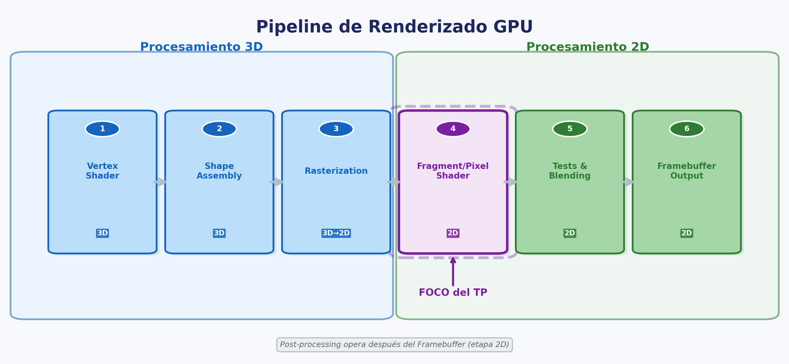
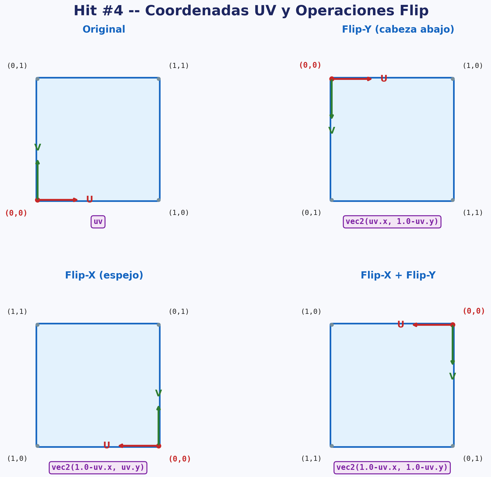
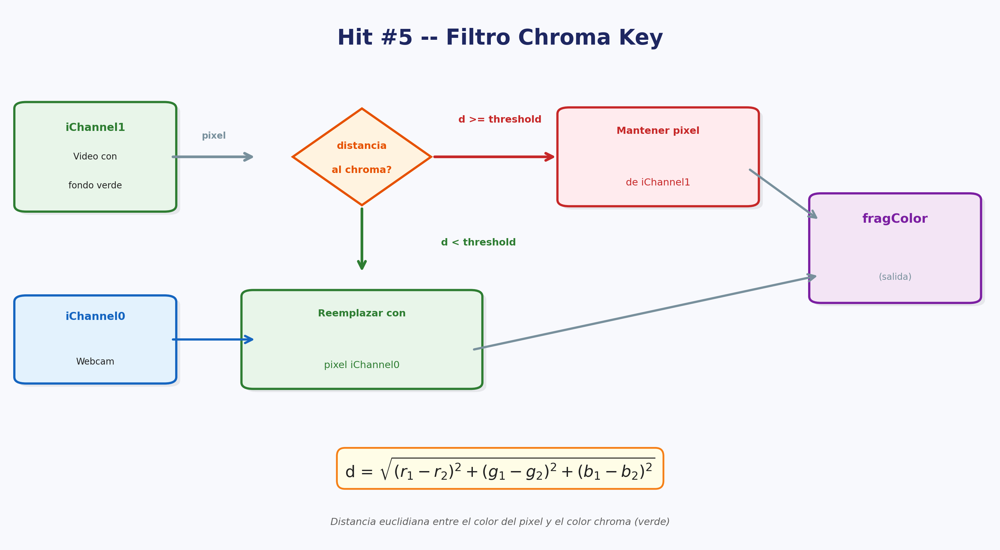
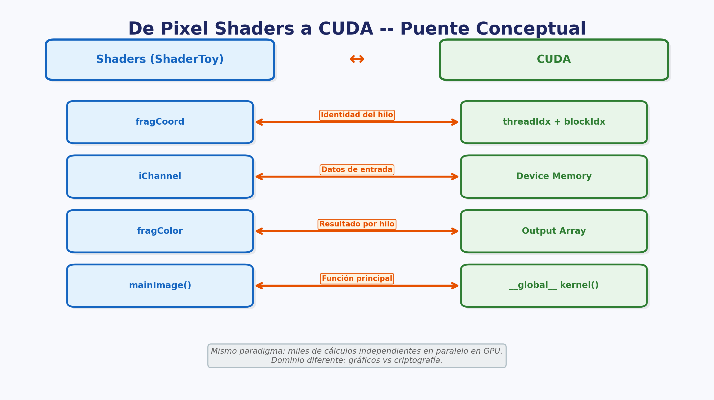

Trabajo Práctico Nº 4
Programación Paralela (Shaders)
Fecha de entrega: 15/05/2026
Requisitos, consideraciones y formato de entrega
- Integrar herramientas de IA en su ciclo de vida de desarrollo (Cursor, ChatGPT/Codex, Claude, GitHub Copilot, etc.). Se espera que las utilicen como asistentes para codificar, depurar y documentar. En el informe, mencionen qué herramientas usaron y cómo les ayudaron.
- Generar un informe detallado que incluya respuestas a consultas, capturas de pantalla, diagramas y conclusiones.
- Mantener un repositorio público en un servicio de
control de versiones como GitHub, Bitbucket o GitLab. Cada ejercicio
(HIT #) debe contar con una carpeta y un README.md explicativo.
- El README.md de cada Hit debe incluir como mínimo: instrucciones, capturas de pantalla de los resultados, y explicaciones de las decisiones tomadas.
- Seguridad:
- No commitear
.env, credenciales ni secrets al repositorio. Configurar.gitignoreapropiado. - Gestionar credenciales por ambiente de forma segura (GitHub Secrets, Secret Manager / Parameter Store). Zero static keys: autenticarse contra cloud providers vía Workload Identity / OIDC.
- Para registros Docker: usar image pull secrets o Workload Identity en lugar de enviar credenciales en payloads.
- Incluir gitleaks [GITLEAKS] en el pipeline de CI — si detecta un secret hardcodeado, el pipeline debe fallar.
- Si expusieron un secret accidentalmente, revóquenlo de inmediato y generen uno nuevo: queda en el historial de Git aunque después lo eliminen.
- No commitear
Contenidos del programa relacionados
- U6.1 Fundamentos de máquinas paralelas: limitaciones de computadoras secuenciales.
- U6.5 GPGPU: procesadores gráficos de propósito general.
- U7.6 Programación con Shaders: Pixel Shaders, Vertex Shaders, pipeline de renderizado GPU, WebGL/GLSL, post-procesamiento.
- U7.7 CUDA: puente conceptual entre shaders y computación de propósito general en GPU.
Práctica
La programación paralela es la respuesta a la necesidad de tener escalabilidad vertical. Es inherente a la existencia de la programación paralela la existencia de 1 único nodo. En el núcleo de un sistema distribuido se encuentra el procesamiento sincrónico. El core de un procesamiento en paralelo es la sincronización. El eje central de este procesamiento es la gestión de recursos compartidos.

Comencemos con lo básico
Imaginemos un proceso A que debe realizar un cómputo paralelo. Este cálculo normalmente se realiza en GPU, ya que la misma ofrece un elevado número de núcleos de bajo rendimiento individual, mientras que la CPU ofrece muy pocos núcleos de alto rendimiento.
El procesamiento de una tarea en paralelo tiene algunas implicancias que se deben tener en cuenta ya que su funcionamiento es sustancialmente diferente al que estamos acostumbrados en CPU.
La forma más “visible” de entender estas diferencias es mediante el procesamiento de gráficos, más concretamente del vídeo en tiempo real.
- Podemos pensar que un pixel es un vector de 4 unsigned byte: el primero representa el rojo, el segundo el verde, el tercero el azul y el cuarto la transparencia.
- Podemos pensar que una línea horizontal de píxeles es un vector de X píxeles, donde X es el ancho de la línea.
- Podemos pensar que una imagen es un vector de Y líneas horizontales, donde Y es el alto de la imagen.
- Podemos pensar que un video es un vector de F imágenes, donde F es la cantidad de fotogramas del video.
En conclusión, procesar un video aplicando una operación como un filtro de escala de grises a cada píxel requiere F * Y * X operaciones. Si esto lo hiciéramos en CPU con un único núcleo, tendríamos que hacer 3 for anidados y sería costoso en tiempo computacional.
Cabe aclarar que el procesamiento paralelo no se limita a procesamiento gráfico; comenzaremos esta guía con este enfoque ya que es la forma más divertida y didáctica de realizar una introducción.
Hit #1 — Pixel shaders y pipeline de renderizado
Visiten el artículo de Wikipedia sobre Shaders [SHADER] y lean los apartados sobre Pixel Shaders (en inglés). Empiecen a elaborar un informe documentando someramente los tipos de shaders. En esta práctica nos enfocamos en los Pixel Shaders que operan en 2D — el referente clásico del lenguaje GLSL es Rost et al. [ROS09].
Consideración: corto y conciso.
Visiten WebGL Fundamentals [WEBGL] y agreguen al informe la descripción del pipeline de renderizado, relacionándolo con el artículo anterior.
Consideración: corto y conciso.
Dividan los 6 pasos del pipeline en aquellos que corresponden al procesamiento 3D y los que corresponden al 2D.
Visiten el artículo de Wikipedia sobre Video post-processing [POSTPR] y agreguen al informe los conceptos básicos. ¿En qué etapa del pipeline se ejecutan?
Consideración: corto y conciso.
Diríjanse a ShaderToy [STOY], plataforma que permite programar shaders gráficos interactivos sobre GPU vía WebGL. Hagan clic en “Nuevo” arriba a la derecha, expandan las “Entradas del shader” y agreguen al informe un listado de las entradas posibles indicando tipo, nombre y descripción breve de qué representa cada una.
Diríjanse al howto de ShaderToy [STOYH] y agreguen al informe un listado de las salidas posibles de los Pixel Shaders, su tipo y una breve descripción de qué representa cada una.
Cuando crea un nuevo ShaderToy, el código de ejemplo que le sugiere la web es el siguiente:
void mainImage( out vec4 fragColor, in vec2 fragCoord ) {
// Normalized pixel coordinates (from 0 to 1)
vec2 uv = fragCoord/iResolution.xy;
// Time varying pixel color
vec3 col = 0.5 + 0.5*cos(iTime+uv.xyx+vec3(0,2,4));
// Output to screen
fragColor = vec4(col,1.0);
}Con apoyo de internet o lo que considere, explique en profundidad cada parte de este shader “hello world”. Debe explicar como mínimo:
- Qué representa
uv. - Por qué es necesario trabajar en UV y no en XY.
- Cómo se logra que el resultado sea una animación siendo que las entradas son estáticas.
- Cómo es posible que
colsea de tipovec3siendo que está igualado a una operación aritmética a priori entre flotantes. - Cuáles son los constructores posibles para
vec4, qué representan los componentes defragColor,uvse presenta comovec2pero se utiliza su propiedadxyx, ¿qué es eso? ¿Qué otras propiedades tienevec2? ¿Yvec3? ¿Yvec4?
Hit #2 — Pintando con código
Vean el video de Inigo Quilez “Painting a Landscape with Maths” [QUI13], donde usando matemáticas, trigonometría, shaders y mucha creatividad pinta un paisaje completo usando solamente código (funciones matemáticas aplicadas píxel a píxel).
Documenten el video de forma somera. ¿Qué conclusiones sacan al respecto?
Consideración: corto y conciso.
Hit #3
Hora de ensuciarse las manos. Utilizando ShaderToy, seleccione en
iChannel0 una fuente de textura para poder continuar esta
guía. Puede ser una imagen de ejemplo, un video de ejemplo o, para
hacerlo más entretenido, su cámara web.
El siguiente shader muestra de forma trivial cómo copiar los píxeles
desde el iChannel0 a la salida:
void mainImage( out vec4 fragColor, in vec2 fragCoord ) {
vec2 uv = (fragCoord.xy / iResolution.xy);
fragColor = texture(iChannel0, uv);
}Hit #4
Utilizando como punto de partida el Hit #3 y sin perder de vista lo que documentó en los hits anteriores, modifique el código para poner la imagen cabeza abajo, es decir, aplicar lo que comúnmente se llama un efecto de FLIP-Y o voltear vertical. Luego haga el FLIP-X o voltee horizontal (también llamado espejo).
Si no lo había hecho previamente, amplíe su informe sobre la potencialidad de UV.

Consideración: Corto y conciso.
Hit #5
Tomando como base el ejemplo anterior, en iChannel1
agregue una fuente de textura de video (puede usar el de ejemplo de
Britney Spears). Quite los efectos flips y muestre la nueva textura en
lugar de la de iChannel0.
Va a implementar ahora un filtro chroma básico: su
objetivo es cambiar el color de los píxeles verdes del fondo por el
video proveniente de iChannel0 (su webcam) para poder
bailar como malocorista detrás de Britney Spears (el baile es opcional
pero altamente recomendable).
Para implementar un filtro chroma primero necesitará recordar algunos conceptos matemáticos, en particular el que proviene de la geometría: la distancia pitagórica en N dimensiones.
Vamos pasito a pasito como decía Mostaza Merlo hasta poder unir todas las piezas (https://www.youtube.com/watch?v=cGBvmbtpLcE).
- En primer lugar tiene que definir el color del chroma dentro de un
vec4. - Luego tiene que definir un umbral de chroma dentro de un
float. - Luego tiene que calcular la distancia entre el color del
iChannel1y el color del chroma con el teorema de distancia pitagórica en N dimensiones, siendo N=3. - Finalmente elegir si mostrar la textura de un canal u otro en función de si la distancia supera o no el umbral establecido.
Modifique el umbral a diferentes valores. Analice los resultados. Documente la experiencia. Haga screenshots bailando como malocorista con el efecto chroma (opcional).

Hit #6 — Filtro escala de grises
Modifiquen el programa para aplicar un filtro de escala de grises [GRAY] (luminancia perceptual) y luego documenten los cambios realizados. Para profundizar en los fundamentos teóricos del procesamiento digital de imágenes, ver Gonzalez & Woods [GON18].

De Pixel Shaders a CUDA: el puente conceptual
Todo lo que programaron en ShaderToy ejecuta en la GPU: cada píxel es procesado por un núcleo independiente en paralelo. Este es exactamente el mismo principio que van a usar en el TP Integrador con CUDA [CUDA], pero aplicado a otro dominio. La correspondencia es directa:
| Concepto en Shaders | Equivalente en CUDA |
|---|---|
| Pixel Shader (fragmento) | CUDA Kernel: una función que se ejecuta miles/millones de veces en paralelo, una instancia por elemento (píxel o dato). |
fragCoord (coordenada del píxel) |
threadIdx + blockIdx (identificador del
hilo en CUDA): cada instancia sabe cuál es su elemento a procesar. |
iChannel (textura de entrada) |
Memoria global de GPU (arrays en device memory): los datos de entrada que cada hilo lee. |
fragColor (salida del píxel) |
Escritura en memoria global: el resultado que cada hilo produce. |
En el TP Integrador, en lugar de procesar píxeles, cada hilo CUDA calculará hashes (MD5) para el proof-of-work de una blockchain. El concepto es el mismo: miles de cálculos independientes ejecutándose en paralelo en la GPU. Lo que cambió fue el dominio (gráficos -> criptografía), no el paradigma.
Referencias y Bibliografía
- [CUDA] NVIDIA. CUDA C++ Programming Guide. https://docs.nvidia.com/cuda/cuda-c-programming-guide/
- [GON18] Gonzalez, R. C. & Woods, R. E. (2018). Digital Image Processing (4th ed.). Pearson. — Cap. 3: Transformaciones de intensidad y filtrado espacial.
- [GRAY] Wikipedia — Grayscale: luminancia y conversión de color. https://en.wikipedia.org/wiki/Grayscale
- [POSTPR] Wikipedia — Video post-processing. https://en.wikipedia.org/wiki/Video_post-processing
- [QUI13] Quilez, I. (2013). “Painting a Landscape with Maths” [Video]. https://www.youtube.com/watch?v=0ifChJ0nJfM
- [ROS09] Rost, R. J. et al. (2009). OpenGL Shading Language (3rd ed.). Addison-Wesley.
- [SHADER] Wikipedia — Shader: Pixel Shaders. https://en.wikipedia.org/wiki/Shader#Pixel_shaders
- [STOY] ShaderToy — Plataforma interactiva de shaders. https://www.shadertoy.com
- [STOYH] ShaderToy — How To. https://www.shadertoy.com/howto
- [WEBGL] WebGL Fundamentals. https://webglfundamentals.org/